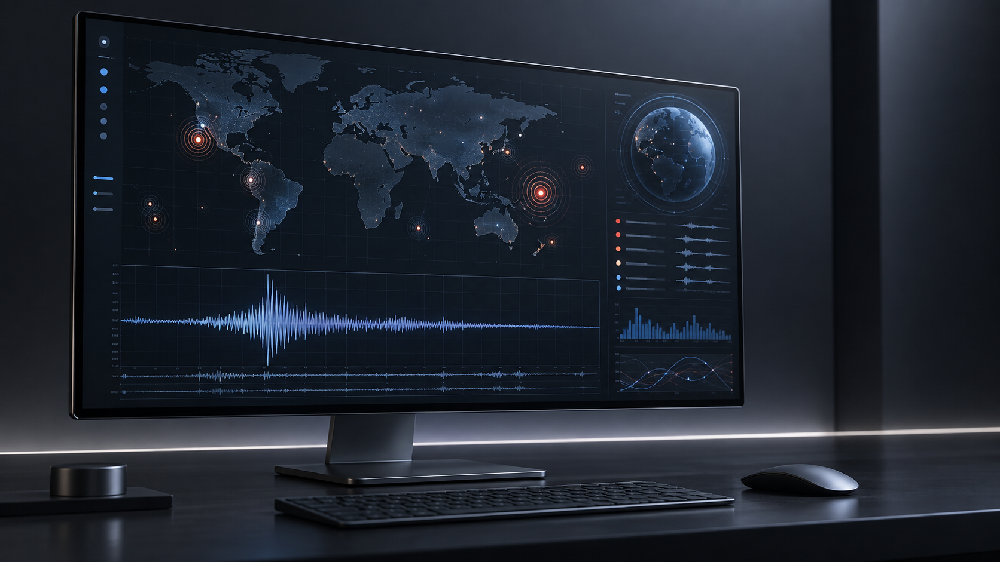
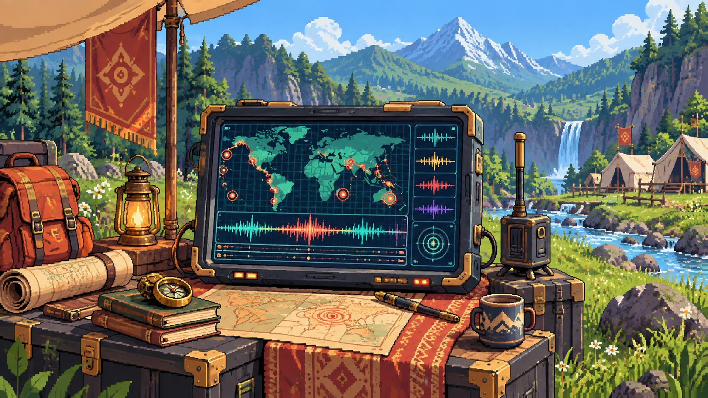
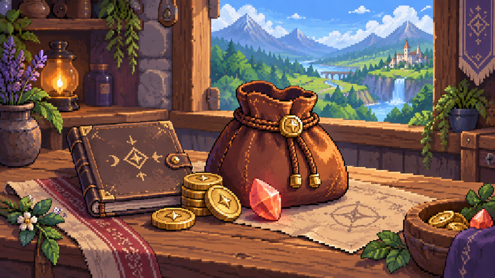

Desarrollo
 JavaScript
JavaScript Node.js
Node.js Express
Express Python
Python HTML5
HTML5 CSS3
CSS3 Tailwind
TailwindDESARROLLADOR FULL STACK · TALCA, CHILE
Construyo software modular y soluciones de datos con una mirada industrial: sistemas claros, eficientes y preparados para operar.
Disponible para colaborar
01 / PERFIL
Desarrollador de software Full Stack y estudiante de Ingeniería en Ejecución Industrial. Combino más de cinco años de experiencia en producción automatizada y soporte analítico con desarrollo web, datos e inteligencia artificial aplicada.
02 / CONOCIMIENTOS
JavaScriptNode.jsExpressPythonHTML5CSS3Tailwind PostgreSQL
PostgreSQL MySQL
MySQL Docker
Docker Git
Git GitHub
GitHub Ollama
Ollama ClaudeCodex
ClaudeCodex Perplexity
Perplexity03 / PROYECTOS


CASO 01ANALÍTICA EN TIEMPO REAL
ProblemaConsolidar señales sísmicas dispersas sin duplicar eventos.
RolDiseño del dashboard, integración de datos y lógica de cliente.
SoluciónSeis fuentes en paralelo, caché local, deduplicación y visualización analítica.
Resultado6 endpoints coordinados para una lectura global más rápida.

CASO 02PLATAFORMA FINANCIERA
ProblemaMantener saldos y movimientos consistentes en una billetera sin backend.
RolArquitectura de la aplicación, interfaz y persistencia local.
SoluciónMódulos de sesión, depósitos, transferencias y libro de movimientos persistente.
ResultadoFlujo contable trazable entre sesiones, sin servicios externos.
04 / EDUCACIÓN
Talento Digital para Chile
Universidad Católica del Maule (UCM)
05 / CONTACTO
Estoy abierto a conversar sobre software, datos y operaciones.